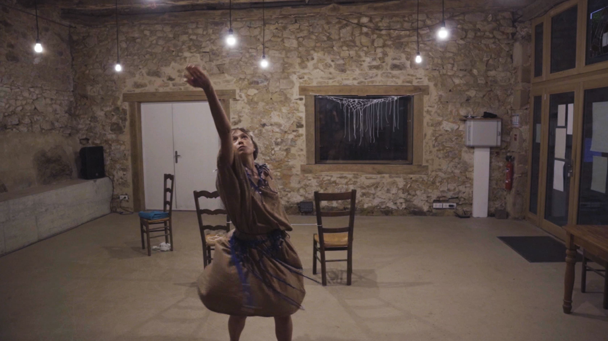
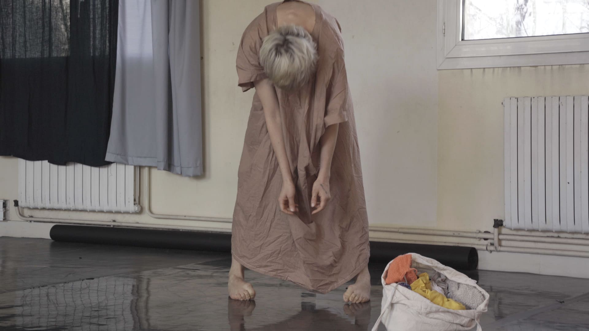
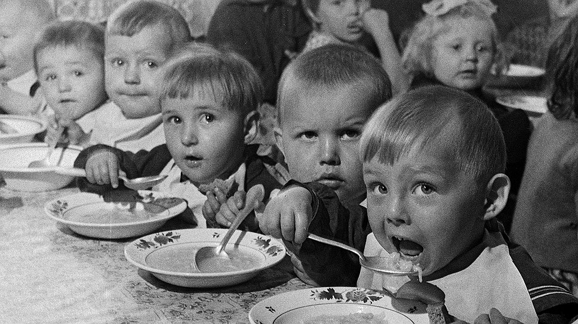

Berceuse
2025, performance, en cours
Chanter à un enfant est une forme de connexion unique. Parfois, les berceuses sont chantées dans la tendresse et le repos ; parfois, elles émergent à bout de forces, porteuses des inquiétudes liées à la vie et à la maternité. La performance explore la question de la maternité et ses représentations. Elle mêle chant, texte, mouvement et projections vidéo.
___
Journal du bord :
Quel est le lien entre le patriarcat et la maternité ?
Et l’avenir ? On projette tout ce qu’on imagine. On imagine beaucoup de choses.
Une nouvelle lecture en lien avec la performance : Trehub, Sandra E.; Hannon, Erin E. (2006). "Infant music perception: Domain-general or domain-specific mechanisms?"



×